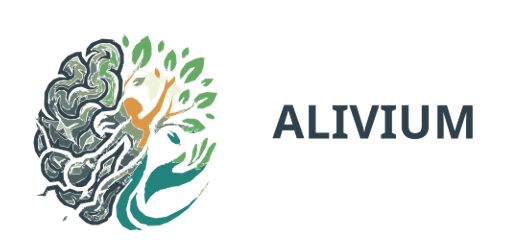

Acolhimento
Um atendimento respeitoso, sem julgamentos e atento à sua história.

Cuidado psicológico para a vida real
Encontre acolhimento e profissionais preparados para cuidar da sua saúde mental com respeito, privacidade e escuta.
Fale com a AliviumNosso propósito
A Alivium conecta pessoas a uma rede de apoio psicológico qualificada, com atendimento humano e acessível.
Um atendimento respeitoso, sem julgamentos e atento à sua história.
Conexão com especialistas preparados para diferentes necessidades.
Conheça nossa equipeSoluções para promover saúde mental também dentro das empresas.
Saúde mental importa
Estresse constante, ansiedade e burnout merecem atenção. Buscar ajuda é um passo de cuidado, não um sinal de fraqueza.
Conheça a Alivium